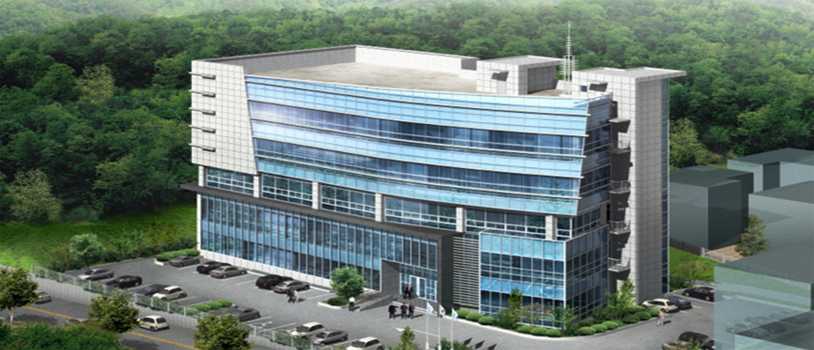

센터소개
발전하는 선진교통 인천 교통정보센터에 오신것을 환영합니다.
인천교통정보센터는 1990년 전자신호체계 도입과 더불어 구축되었으며, 교통신호기, 안전표지, CCTV(폐쇄회로텔레비젼) 및 가변안내전광판의 운영을 통하여 각종 교통정보를 분석, 체계화하여 원활한 교통소통과 안전을 확보하고, 필요시에는 교통경찰관의 지령 및 제반 교통통제를 유기적으로 운영하기 위하여 1991년 4월 인천시 남구 주안5동 20-35 소재에 센터를 건축 개관하였습니다.
인천교통정보센터는 정확한 교통정보서비스를 제공하기 위하여 정보수집 및 가공체계와 유무선 인터넷 등 누구나 교통정보를 쉽게 접할 수 있도록 지속적인 시스템 기능개선 및 시설확충을 통하여 최상의 교통정보서비스가 되도록 노력하고 있으며, 종합적이고 최첨단의 교통정보센터 기능과 역할수행을 위하여 인천시 남동구 간석3동 67-11번지 소재로 2008년11월26일 센터를 이전 개관하였습니다.
센터연혁
| 1988. 04. 13 | 전자감응식 신호체계 설치계획 수립 (인천시 경찰국) |
|---|---|
| 1990. 04. 05 ~ 1991. 02. 18 | 교통관제센터 신축, 인천시 남구 주안5동 20-35 |
| 1991. 04. 03 | 교통관제센터 개관 |
| 1991. 04. 10 | 교통관제센터 운영지침 수립(시경찰국) |
| 1994. 12. 03 | 인천지방경찰청 교통정보센터로 명칭 변경 |
| 2007. 04. ~ 2008. 11. 26 |
교통정보센터 신축/이전
|
교통정보센터 주요 업무
교통신호 운영
첨단신호운영 주전산기 및 지역제어 장치에 의한 온라인 운영으로 도로의 교통신호기를 제어하고 인접교차로간 신호체계를 연동화하여 원활한 교통소통이 될 수 있도록 최적의 신호운영을 하고 있습니다.
교통관리 및 정보제공
시내 주요교차로에 있는 CCTV를 이용하여 도로상의 교통흐름을 24시간 감시하고 교통사고 및 돌발상황 발생시에 교통경찰관에게 무선 지령에 의한 신속한 현장대응관리로 도로상에서 발생되는 사고예방 및 이용자의 불편을 최소화 하고 있으며 CCTV 및 차량검지기, 타 기관과의 정보연계 등을 통하여 교통정보를 수집, 가공, 분석하여 인터넷, 가변전광판, 교통안내전화(032-455-2153:관제실)로 실시간 제공하고 있습니다.